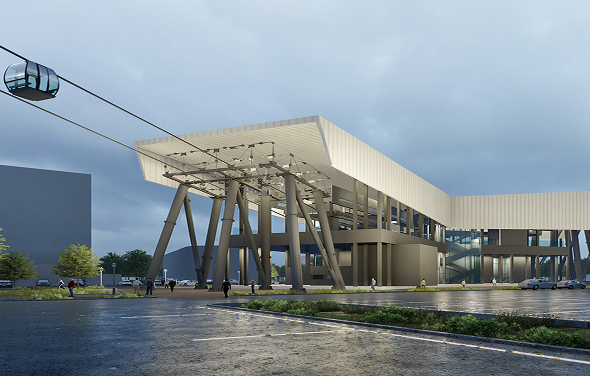
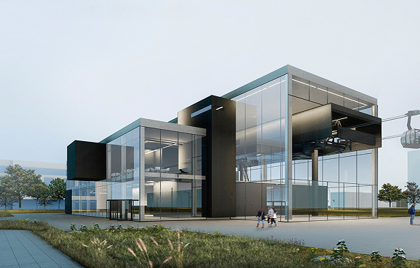
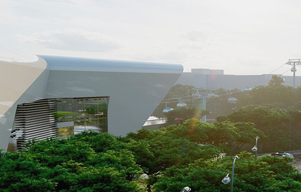

<section class="news" id="news">
    <div class="news__container container">
        <header class="news__header">
            <h2 class="news__title" id="news-title">Новости</h2>
            <a href="#" class="news__button">
                <span class="news__button-text">Смотреть все</span>
                <div class="news__button-icon">
                    <svg width="26" height="26" viewBox="0 0 26 26" fill="none" xmlns="http://www.w3.org/2000/svg">
                        <path d="M20 8L24.5 13M24.5 13L20 18M24.5 13H1" stroke="none" stroke-width="1.5"
                            stroke-linecap="round" stroke-linejoin="round" />
                    </svg>
                </div>
            </a>
        </header>
        <div class="news__list">
            <article class="news__item">
                <a href="#" class="news__link">
                    <figure class="news__image">
                        
                    </figure>
                    <div class="news__content">
                        <h3 class="news__item-title">
                            Нижегородский Минстрой выдал разрешение на <br /> строительство канатной дороги через Оку
                        </h3>
                        <p class="news__item-text">
                            Ранее проект получил положительные заключения государственной экспертизы и государственной
                            экологической экспертизы.
                        </p>
                        <time class="news__date" datetime="2025-05-20">20.05.2025</time>
                    </div>
                </a>
            </article>
            <article class="news__item">
                <a href="#" class="news__link">
                    <figure class="news__image">
                        
                    </figure>
                    <div class="news__content">
                        <h3 class="news__item-title">
                            Ранее проект получил положительные <br /> заключения государственной экспертизы <br /> и
                            государственной
                            экологической экспертизы.
                        </h3>
                        <p class="news__item-text">
                            Канатная дорога свяжет бульвар Заречный с проспектом Гагарина в качестве альтернативного
                            вида
                            городского пассажирского транспорта.
                        </p>
                        <time class="news__date" datetime="2025-03-20">20.03.2025</time>
                    </div>
                </a>
            </article>
            <article class="news__item">
                <a href="#" class="news__link">
                    <figure class="news__image">
                        
                    </figure>
                    <div class="news__content">
                        <h3 class="news__item-title">
                            Проведение общественных обсуждений <br /> (в форме опроса) объекта государственной <br />
                            экологической
                            экспертизы
                        </h3>
                        <p class="news__item-text">
                            Срок проведения общественных обсуждений: 30 календарных дней, в период с 18 июля 2024 г. по
                            16
                            августа 2024 г. включительно
                        </p>
                        <time class="news__date" datetime="2024-07-12">12.07.2024</time>
                    </div>
                </a>
            </article>
        </div>
    </div>
</section>
